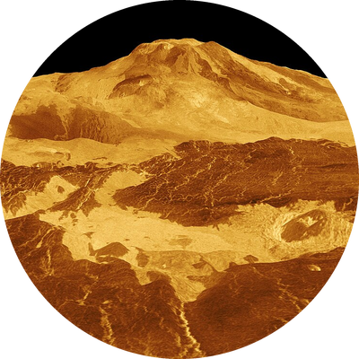
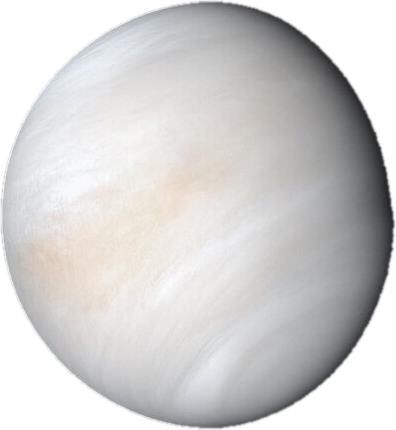
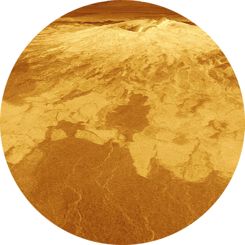

Venus
Venus is the second planet from the Sun. It is wrapped in thick clouds that trap heat, which makes it the hottest planet.



Facts about Venus
- Diameter: about 12,104 km, almost the same size as Earth
- Distance from the Sun: about 108 million km
- Surface temperature: about 465 °C, hotter than Mercury
- A day on Venus (243 Earth days) is longer than its year (225 Earth days)
- It spins backward compared to most planets
- Its air is mostly carbon dioxide, with pressure about 90 times Earth's